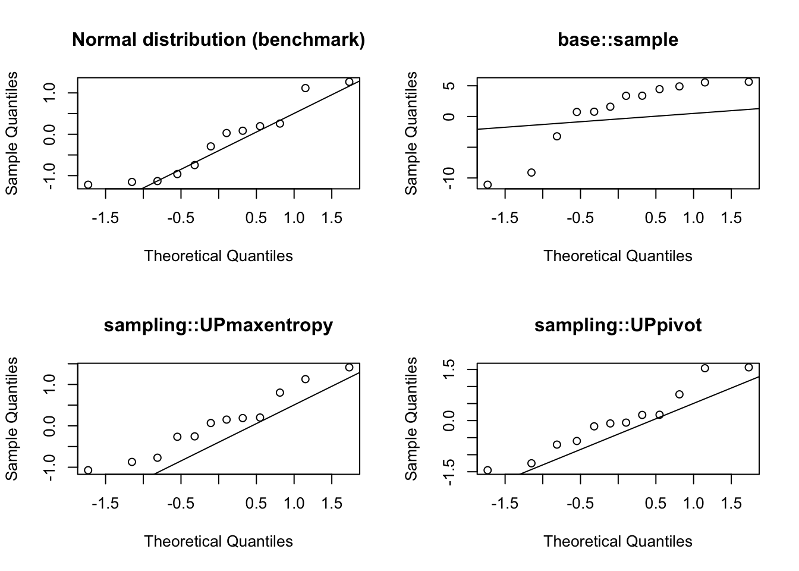

set.seed(123)
N <- 12
n <- 4
p <- (1:N)/sum(1:N)
pik <- n * p
pikest_base <- vector(mode = "numeric", length = N)
nsim <- 1e4
for (j in 1:nsim) {
s <- sample.int(n = N, size = n, replace = FALSE, prob = p)
pikest_base[s] <- pikest_base[s] + 1
}
pikest_base <- pikest_base/nsimEnhancing sample.int for unequal probability sampling
C
R
Wishlist
Models
Problem statement
The method of unequal probability sampling without replacement, as implemented in base::sample (base::sample.int), relies on a sequential algorithm (coded in C). This algorithm does not respect the prescribed inclusion probabilities (as defined by the prob parameter). Consequently, it can produce a biased Horvitz-Thompson estimate.
The issue can affect other packages as illustrated by this dplyr issue affecting slice_sample.
To better understand the problem, consider the illustration below, following (Tillé 2023).
After estimating the inclusion probabilities with sample.int, we can compare them with algorithms from the sampling package, as highlighted in its documentation.
library(sampling)
set.seed(42)
pikest_maxent <- sapply(1:nsim, \(i) UPmaxentropy(pik))
pikest_maxent <- rowMeans(pikest_maxent)
pikest_pivot <- sapply(1:nsim, \(i) UPpivotal(pik))
pikest_pivot <- rowMeans(pikest_pivot)
cbind(pik,
pikest_base,
pikest_maxent,
pikest_pivot) pik pikest_base pikest_maxent pikest_pivot
[1,] 0.05128205 0.0587 0.0544 0.0511
[2,] 0.10256410 0.1194 0.1050 0.1049
[3,] 0.15384615 0.1699 0.1507 0.1486
[4,] 0.20512821 0.2279 0.2008 0.2058
[5,] 0.25641026 0.2778 0.2553 0.2538
[6,] 0.30769231 0.3233 0.3129 0.3149
[7,] 0.35897436 0.3627 0.3593 0.3556
[8,] 0.41025641 0.4181 0.4110 0.4111
[9,] 0.46153846 0.4652 0.4577 0.4607
[10,] 0.51282051 0.4967 0.5115 0.5205
[11,] 0.56410256 0.5189 0.5651 0.5579
[12,] 0.61538462 0.5614 0.6163 0.6151To evaluate the accuracy of the sampling algorithm, we can compute the following test statistic:
\[ z_k = \dfrac{(\hat{\pi_k} - \pi_k) \sqrt{M}}{\sqrt{\pi_k (1 - \pi_k)}} \]
where \(M\) is the number of simulations.
\(z_k\) should be asymptotically normal under the null hypothesis that the sampling algorithm is correct. The implementation is as follows:
test_stat <- function(est, pik)
(est - pik) / sqrt(pik * (1 - pik)/nsim)We can compute this test statistics for each method and check its normality using a qqplot.

These charts show how base::sample deviates more from normality compared to the other two competing algorithms available in the sampling package.
Proposed solution
- Option 1:
- Refine the documentation for
base::sampleandbase::sample.int. - Suggest adding a concise paragraph in the
Detailssection, explaining why the function is not suitable for unequal probability sampling based on inclusion probabilities.
- Refine the documentation for
- Option 2:
- Introduce a new
Cfunction and an additional argument tosample.intto incorporate the new method. - Retain the original
ProbSampleNoReplaceCfunction. - By default,
base::sample.intshould utilizeProbSampleNoReplacefor unequal probability sampling without replacement. This ensures backward compatibility and prevents disruptions to existing code.
- Introduce a new
It is hard to pick one algorithm over the multitude of available unequal probability sampling algorithms. In theory, there’s no best algorithm for unequal probability. However, the Maximum Entropy Sampling algorithm (sampling::UPmaxentropy) also known as Conditional Poisson Sampling is an algorithm with good properties (maximizing entropy) that can be used as a reference.
Project requirements
- Good understanding of survey sampling algorithms.
- Good C and R coding skills.
Project outcomes
An enhanced version of sample (sample.int) with a new argument to select the new algorithm for unequal probability sampling.
References
Tillé, Yves. 2023. “Remarks on Some Misconceptions about Unequal Probability Sampling Without Replacement.” Computer Science Review 47: 100533. https://doi.org/10.1016/j.cosrev.2022.100533.